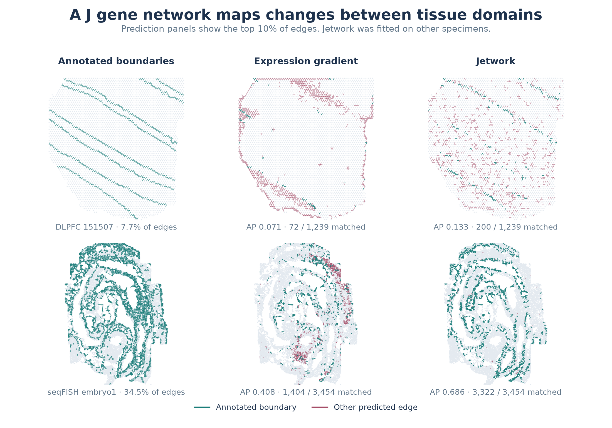

juxtaposed: the juxtaposition index J
Find where two expression programs meet in tissue. Boundary J scores whether two genes change in opposite directions across the same edges of the tissue graph: an interface. Regional J scores whether they share neighbourhoods. Boundary J comes with p-values from a spectral sign-flip test that keeps each gene's spatial autocorrelation, with no permutations. Use Jetwork to rank tissue boundaries.
App for R and Seurat users
Point and click: open a Seurat object (.rds), a 10x Visium, Visium HD or Xenium output, or any table, or try a real 10x mouse brain section. Interfaces on the H&E image, co-localization, downloads and a Methods paragraph.
Open the R app →App for Python and Scanpy users
The same analysis for AnnData (.h5ad), 10x Visium, Visium HD and Xenium outputs, and tables, built on the Python package.
Open the Python app →Seurat vignette (R)
From a processed Seurat object to interfaces, maps, co-localized modules and a runnable Jetwork workflow with held-out annotations.
Read the vignette →Scanpy notebook (Python)
The same analysis on AnnData, step for step, on the same Visium section. Works with Squidpy graphs too.
Read the notebook →Jetwork ranks transitions between tissue domains
Fit a gene network that combines co-expression within regions with opposing expression changes across tissue edges. Use it to nominate marker partners and map candidate boundaries in a new specimen.
- Fit
fit_jetwork(training)on expression and spatial graphs from training specimens. - Run
score_jetwork_edges(model, expression, graph)on a held-out section to rank its edges. - With held-out labels, use
evaluate_jetwork_edges(edges, annotations)to measure average precision and top-10% Jaccard at a matched prediction budget.
Run the Seurat example Download Jetwork R helpers
Held-out seqFISH embryos. Adding Jetwork raised mean boundary average precision from 0.446 to 0.704 and top-10% Jaccard from 0.122 to 0.274. DLPFC and MERFISH showed little improvement. The seqFISH labels were informed by expression and anatomy. Annotation methods

Which score answers my question?
| Question | Score | Reads |
|---|---|---|
| Do two programs meet at an interface and change in opposite directions across it? | Boundary J | J > 0 opposing; J < 0 concordant; J ≈ 0 no shared boundary |
| Where is that interface? | Edge map | High signed evidence marks the interface edges |
| Are two genes expressed in the same neighbourhoods? | Regional J | > 0 shared region; < 0 complementary regions |
| Can I trust the normal approximation behind a pair's p-value? | Effective modes | Python: res.extra["modes"]. With fewer than about 20 modes, use method="auto" for Monte Carlo sign-flip p-values |
Install
# R
remotes::install_github("son9john/Spatial_singlecell_DL", subdir = "J/r/juxtaposed", ref = "juxtaposition-index")
# Python
pip install "git+https://github.com/son9john/Spatial_singlecell_DL@juxtaposition-index#subdirectory=J/python"Current versions: Python juxtaposed 0.5.0 (adds Monte Carlo p-values and effective spectral modes) and
R juxtaposed 0.4.0.
The apps run entirely in your browser with WebAssembly (Shinylive). The first load downloads R or Python and takes 20–60 seconds; data you open stay on your computer. Example data: 10x Genomics, Mouse Brain Serial Section 1 (Sagittal-Anterior), CC BY 4.0.